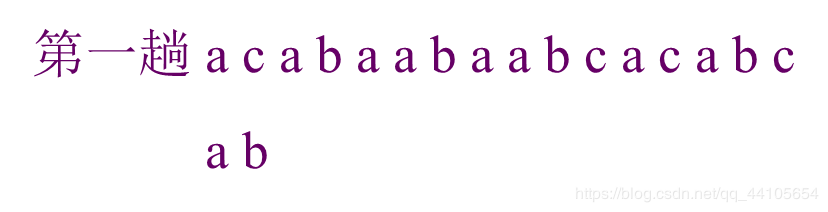
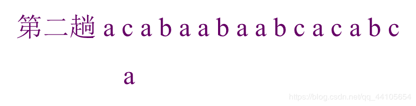
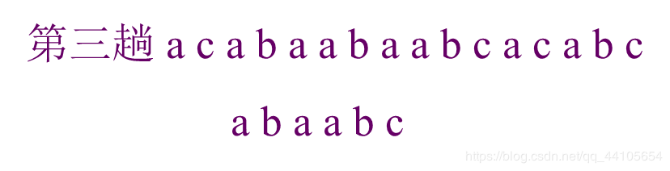
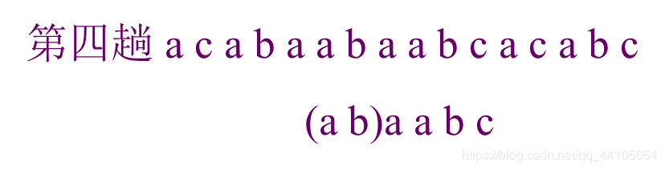
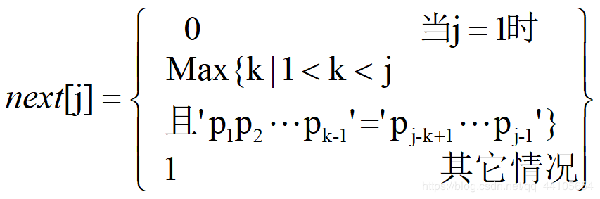

1.模式匹配简单算法
Index(S,T,pos);
初始条件：串S和T存在，T是非空串，1≤pos≤StrLength(S)。
操作结果：若主串S中存在和串T值相同的子串返回它在主串S中第pos个字符之后第一次出现的位置；否则函数值为0。
int Index (String S, String T, int pos) {
// T为非空串。若主串S中第pos个字符之后存在与 T相等的子串，则返回第一个这样的子串在S中的位置，否则返回0
if (pos > 0) {
n = StrLength(S); m = StrLength(T); i = pos;
while ( i <= n-m+1) {
SubString (sub, S, i, m);//表示在S串中取从第i位置开始的m长度字串并存在sub里
if (StrCompare(sub,T) != 0) ++i ;//比较，不成功则往后移
else return i ;
} // while
} // if
return 0; // S中不存在与T相等的子串
} // Index
如果我们不采用串的基本操作的话，还可以这样写
int Index(SString S, SString T, int pos) {
// 返回子串T在主串S中第pos个字符之后的位置。若不存在，
// 则函数值为0。其中，T非空，1≤pos≤StrLength(S)。
i = pos; j = 1;
while (i <= S[0] && j <= T[0]) {
if (S[i] == T[j]) { ++i; ++j; } // 继续比较后继字符
else { i = i-j+2; j = 1; } // 指针后退重新开始匹配
}
if (j > T[0]) return i-T[0];
else return 0;
} // Index
将S串于T串一个字符一个字符的进行比较，一旦不同则将i退到开始上一次开始比较的位置的下一个，j直接退到T串的串首即可
设上次一比较在S串中的起始位置为x则 x+j-1=i
所以x=i-j+1则下一个位置为i-j+2，所以是i=i-j+2
匹配成功，同样返回首位置，否则返回零
上述算法时间复杂度最坏都达到了O(m*n);
2.模式匹配的改进算法(KMP算法)
KMP算法的改进在于：
每当一趟匹配过程中出现字符比较不相等时，不需回溯i指针，而是利用已经得到的“部分匹配”的结果将模式向右“滑动”尽可能远的一段距离后，继续进行比较，i不动，j向前移
举个例子
比较s=‘acabaabaabcacaabc’ t=‘abaabc’

第一次比较时比较到第二个发现不同，于是将j指针移回a

接着进行比较，比较到t中的c时发现不一样，但此前已经比较过两次ac,无需再比一次，所以将j指针移到t中的第三个a即可


这样就比完了，比上一种方法要少比很多次，效率提高了不少
在用这种方法时，我们需要知道每次比较不一样时j指针需要回到t串中的那个位置，所以我们用next数组来存放回溯的位置，就串t=‘abaabc’来说，next[j]={0,1,1,2,2,3};j从1开始
即

算法实现如下
由于我们模式串的数据是从第一个开始存放，为了不浪费空间，这里把模式串的长度放在t[0]里面
int Index_KMP(SString S, SString T, int pos) {
// 1≤pos≤StrLength(S)
i = pos; j = 1;
while (i <= S[0] && j <= T[0]) {
if (j == 0 || S[i] == T[j]) { ++i; ++j; }
// 继续比较后继字符
else j = next[j]; // 模式串向右移动
}
if (j > T[0]) return i-T[0]; // 匹配成功
else return 0;
} // Index_KMP
next函数
void get_next(SString &T, int &next[] ) {
// 求模式串T的next函数值并存入数组next
i = 1; next[1] = 0; j = 0;
while (i < T[0]) {
if (j == 0 || T[i] == T[j])
{++i; ++j; next[i] = j; }
else j = next[j];
}
} // get_next
此外，如果不匹配时发现前面已经比较过的，和将要比较的那个是完全一样的话，就没有比下去的必要了，例如模式串为 aaaab时，如果j=3发现不同，按上一种方法，则应移到j=2经行比较，但j=2时也是a，再比较就相当于多比了一次，这样就有了改进的空间。
代码如下：
void get_nextval(SString &T, int &nextval[]) {
i = 1; nextval[1] = 0; j = 0;
while (i < T[0]) {
if (j == 0 || T[i] == T[j]) {
++i; ++j;
if (T[i] != T[j]) next[i] = j;
else nextval[i] = nextval[j];
}
else j = nextval[j];
}
} // get_nextval
我的个人博客 amazingz6.github.io
我的bilibili https://space.bilibili.com/66908429
我的CSDN https://blog.csdn.net/qq_44105654
我的简书 https://www.jianshu.com/u/607ef08e5825
我的github https://github.com/AmazingZ6?tab=repositories